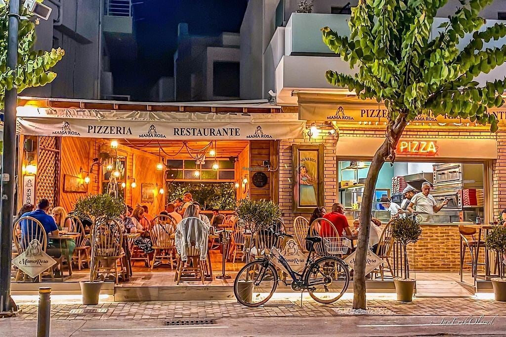
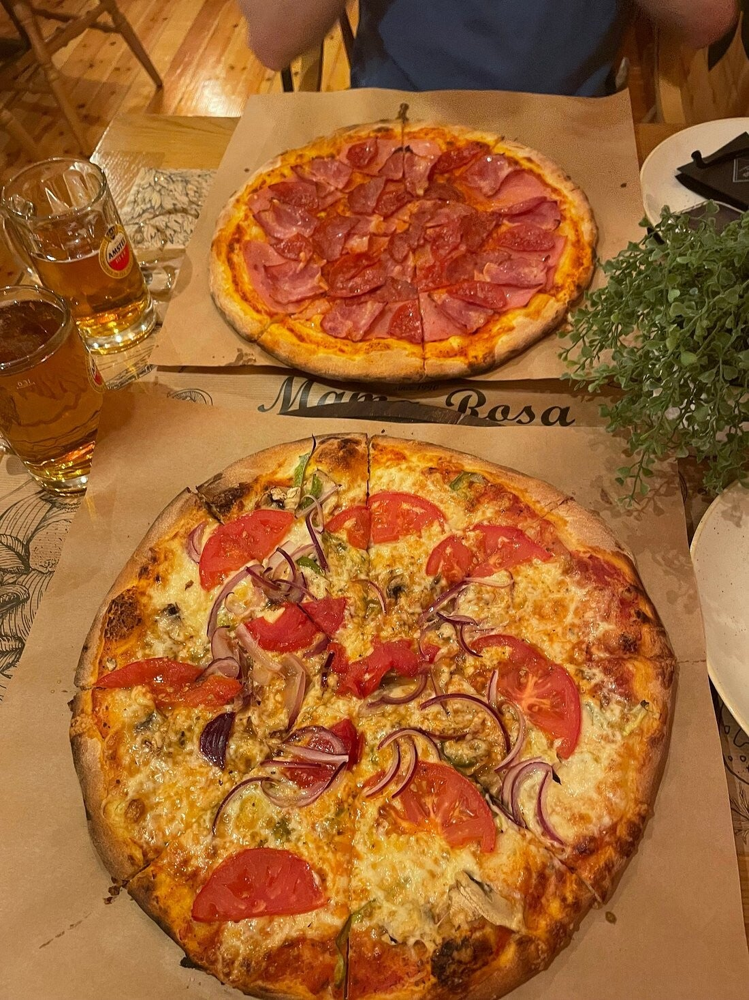
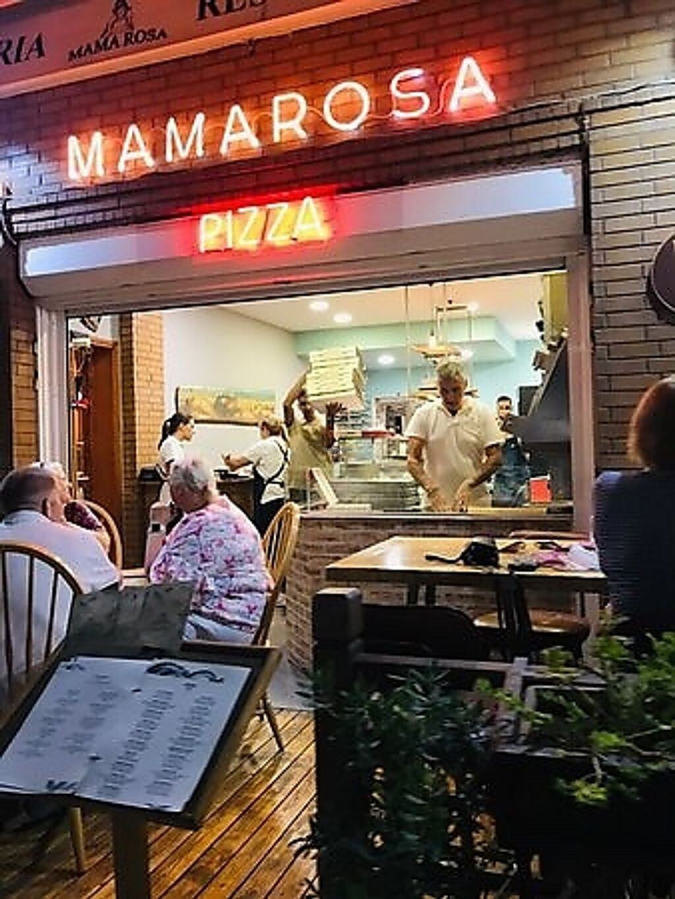
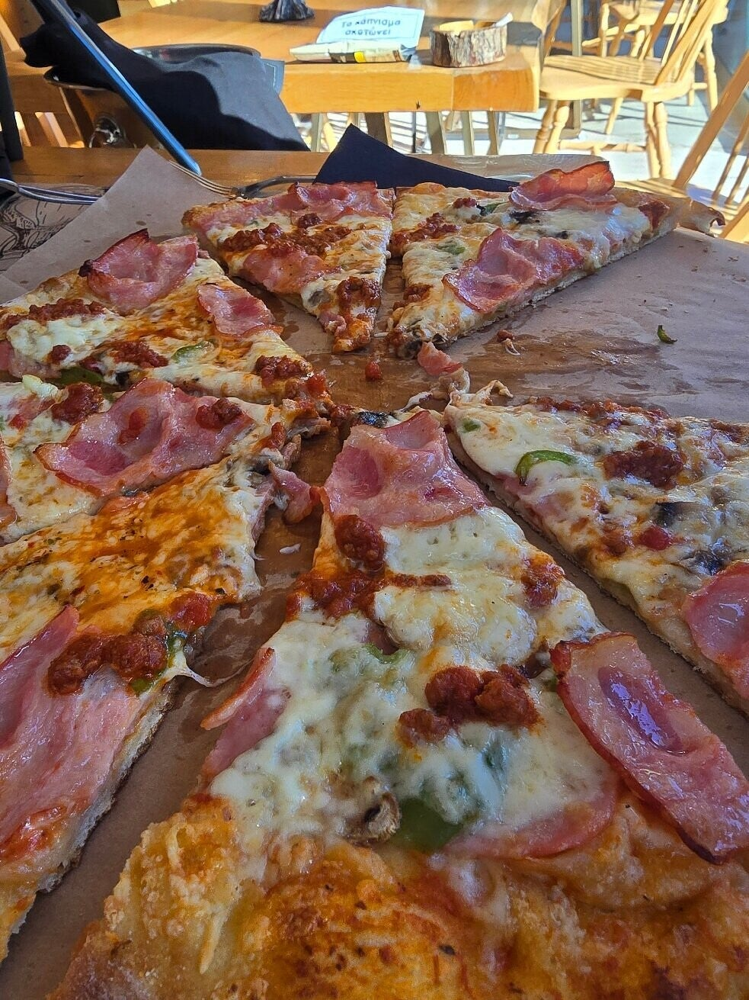

★ Echt de beste pizza op Kos
Kos-stad
Italiaanse pizzeria · sinds 1992
De beste pizza op Kos
Mamma Rosa is absolute nummer 1: de beste pizza van het hele eiland. Deze Italiaanse pizzeria in Kos-stad bestaat al sinds 1992. Dunne, knapperige pizza’s met verse ingrediënten en een perfecte korst uit de houtoven.

Sfeer & eten
Royaal, smaakvol, recht uit de oven. Locals en terugkerende bezoekers komen hier bewust voor de pizza. Daarnaast pasta’s en salades. Eenvoudig, gezellig en vaak druk – precies zoals een goede Italiaanse pizzeria hoort te zijn. Als je op Kos de allerbeste pizza wilt, is dit de plek.


Praktisch
In Kos-stad. Meestal open 11:00–23:30, dagelijks. Populair: bij drukte even wachten of vroeg komen. Telefonisch bereikbaar voor info of een tafel.
